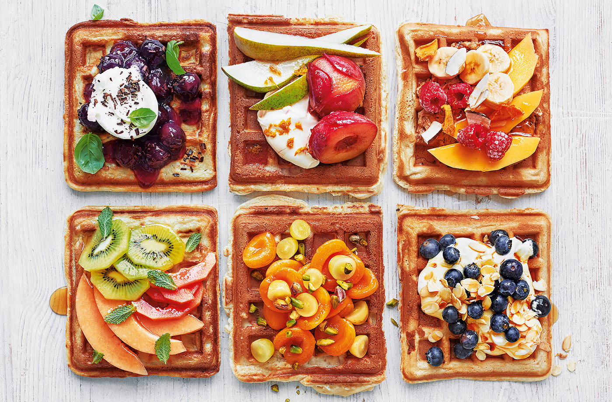

Recept na vafle

Wafle jsou křupavé a lahodné dezerty, které si můžete snadno připravit doma pomocí waflového železa. Tyto oblíbené pochoutky jsou často servírovány s ovocem, šlehačkou, javorovým sirupem nebo s čokoládou. Základem receptu na wafle jsou obvykle mouka, vejce, mléko, sůl a máslo. Následující recept vám ukáže, jak snadno a rychle připravit skvělé wafle v pohodlí vaší domácnosti.
Ingredience:
- mléko plnotučné 300ml
- vejce 2 ks
- vanilkový cukr 1 bal
- mouka hladká 300g
- kypřící prášek
- olej/ máslo na smažení
- ovoce k podávání
Postup přípravy:
- Ve větší míse důkladně prošlehejte všechny ingredience na vafle, kromě másla.
- Rozehřejte pořádně vaflovač a v případě potřeby jej vymažte máslem. Vaflovač má být opravdu horký.
- Do jeho středu nalijte naběračku těsta, přiklopte a pečte dozlatova. Postupně takto spotřebujte všechno připravené těsto.
- Hotové vafle podávejte ozdobené ovocem, s lístky máty, přelité sirupem a pocukrované. Podle chuti můžete použít i jiné suroviny - šlehačku, nasekané oříšky, čokoládu, nebo karamel. Luxusní vafle připravíte v kombinaci s vanilkovou zmrzlinou, slaným karamelem a nasekanými lískovými oříšky.